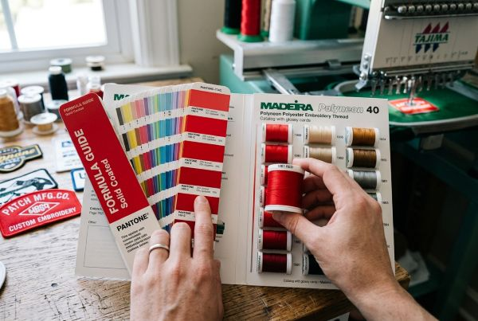

Color Guide for Patch Design: Thread & Material Selection
Master the art and science of color matching for custom patches. Learn Pantone-to-thread conversion standards, color contrast legibility rules, fabric twill pairings, specialty thread techniques, and production limits across all patch styles.

Color is the single most powerful visual component of any custom patch. It commands attention, conveys brand identity, evokes emotion, and establishes visual hierarchy. However, designing colors on a backlit computer screen is vastly different from translating those colors into physical polyester threads, woven yarns, molded PVC polymers, or dyed genuine leathers.
A color palette that looks striking on your monitor can turn muddy, unreadable, or washed out once stitched onto fabric if thread contrast, light reflection, material absorption, and stitch density limits are overlooked. In this comprehensive, factory-level Patch Design Color Guide, our master digitizers and embroidery engineers share industry secrets for choosing, matching, and balancing thread and material colors to guarantee vibrant, crisp patches every time.
1. The Physics & Psychology of Color in Custom Patches
Unlike flat paper printing or digital UI design, embroidered and woven patches exist in a 3-dimensional physical realm. When light strikes an embroidered patch, the cylindrical shape of individual polyester thread filaments creates natural highlights and micro-shadows depending on the stitch angle (satin stitch vs. fill stitch).
This physical sheen enhances color vibrancy but can also create optical illusions:
- Glossy Polyester Sheen: High-sheen polyester threads reflect ambient light, making mid-tone reds, blues, and golds appear roughly 5% to 10% brighter than flat CMYK prints.
- Stitch Direction & Color Perception: Two identical red threads stitched at perpendicular angles (90 degrees apart) will reflect light differently, causing them to appear as slightly different shades to the human eye. Master digitizers use this phenomenon to create depth without adding extra thread colors.
- Color Bleed & Optical Blending: Placing thin yellow text directly adjacent to a dark navy fill without a high-contrast underlay can cause the dark background to show through between stitches, dulling the yellow hue.
2. Digital Artwork vs. Physical Thread Standards (RGB/CMYK to PMS)
Graphic designers typically create vector artwork using RGB (Red, Green, Blue) light pixels for web display or CMYK (Cyan, Magenta, Yellow, Black) inks for print. Custom patch factories, however, work with pre-dyed thread spools from industry-standard thread manufacturers such as Madeira Polyneon, Isacord, and Robison-Anton.

To bridge the gap between digital artwork and physical production, the global manufacturing benchmark is the Pantone Matching System (PMS Solid Coated). When submitting vector files (.AI, .EPS, or .PDF), specifying Pantone C numbers allows our production team to select thread spools within a 95% to 99% chromatic match.
Pro Tip: Why Monitor Colors Can Mislead
Uncalibrated computer monitors display colors differently based on brightness, tint, and screen technology (OLED vs. IPS). Always reference physical Pantone Solid Coated color swatches or request a pre-production sample photo from your manufacturer to verify thread shades under natural daylight.
3. Color Capacity & Technical Limits Across 5 Patch Types
Each patch manufacturing process has distinct technical boundaries regarding how many colors it can accommodate and how fine the details can be rendered. Below is a comprehensive comparison matrix:
4. The Golden High-Contrast Rule for Text & Small Details
The single most critical factor in patch legibility is **contrast**. Text or intricate logo elements must stand out sharply from the underlying background twill or fill stitching. Because thread creates micro-shadows, low-contrast combinations bleed together, rendering small text unreadable.
Minimum Text Size & Line Thickness Rules:
- Embroidered Patches: Minimum text height must be 0.25 inches (6.35mm) with a minimum line thickness of 0.9mm. Anything smaller will bunch up into illegible thread knots.
- Woven Patches: Minimum text height can be as small as 0.12 inches (3mm) with line thickness down to 0.3mm thanks to ultra-thin warp and weft yarns.
- Contrast Ratio Benchmark: Aim for a minimum contrast ratio of 4.5:1 between foreground text thread and background fabric.
Winning High-Contrast Color Formulas:
- Military / Tactical: Bright Gold or White text over Dark Navy, Black, or Olive Drab twill.
- High-Visibility Safety: Glossy Black lettering over Neon Fluorescent Yellow or Signal Orange.
- Classic Vintage: Cream / Off-White lettering over Crimson Red or Deep Forest Green twill.
- Corporate Modern: Crisp Pure White lettering framed by a Dark Gray merrowed border on Charcoal twill.
5. Fabric Twill Backing & Thread Harmonization (Coverage % Explained)
Custom embroidered patches are categorized by their embroidery coverage percentage relative to the patch surface area:
- 50% Embroidery Coverage: Roughly half of the patch surface consists of exposed twill fabric backing. The twill fabric color acts as the primary background color.
- 75% Embroidery Coverage: Most of the patch is covered in thread stitching, with small sections of exposed twill fabric.
- 100% Embroidery Coverage: Every square millimeter of the patch surface is covered in dense thread stitching. No background fabric is exposed.
For 50% and 75% coverage patches, matching the background twill fabric color with your artwork color palette is essential. At ChinaPatchFactory, we maintain over 80 standard twill fabric colors (including heavy-duty polyester-cotton twills, felt, and velvet) to ensure seamless harmony between fabric and thread.
6. Specialty Threads: Metallic, Neon, Reflective & Glow-in-the-Dark
Specialty threads transform ordinary patches into extraordinary visual statements. However, specialty threads require specific digitizing and manufacturing techniques:
Metallic Threads
Gold, silver, and copper metallic threads feature synthetic foil wrapping around a polyester core, delivering genuine metallic shine for crests and luxury brands.
Neon & Fluorescent Threads
Electric pink, vibrant lime, and bright orange neon threads absorb UV light to produce high-impact pop for streetwear and safety gear.
Glow-in-the-Dark Threads
Phosphorescent threads absorb natural sunlight or ambient room light and emit a bright green or luminous blue glow in dark environments.
7. Step-by-Step Color Checklist for Graphic Designers
Before uploading your vector artwork to ChinaPatchFactory for quote approval, run through this 7-point color pre-flight checklist:
- ✔️ Specify Pantone PMS Codes: Provide PMS Solid Coated numbers for core brand colors.
- ✔️ Check Color Count: Keep thread colors under 9 shades to avoid added color fees.
- ✔️ Verify Contrast: Ensure text thread color contrasts sharply with the background twill or fill stitch.
- ✔️ Eliminate Subtle Gradients (for Embroidery): Convert smooth color fades into solid color blocks or choose Printed Sublimation Patches.
- ✔️ Set Border Thread Color: Explicitly define the merrowed or laser-cut border thread color.
- ✔️ Check Minimum Text Height: Verify that text is at least 0.25 inches (6.35mm) tall for embroidery.
- ✔️ Review 12H Digital Proof: Carefully inspect the digital color proof sent by our master digitizer before approving production.
Frequently Asked Questions (FAQ)
Q1: How many thread colors can I include in an embroidered patch for free?
At ChinaPatchFactory, up to 9 thread colors are included completely free in our standard wholesale prices. Additional thread colors beyond 9 can be added for a small per-patch charge up to 15 colors maximum.
Q2: How accurate is Pantone thread matching?
By cross-referencing Pantone Solid Coated (PMS C) codes against our 400+ stock Madeira and Isacord polyester thread spools, we achieve a 95% to 99% chromatic match. For high-volume production (500+ pcs), custom thread dyeing is available for 100% exact matches.
Q3: What patch type is best if my design has smooth photo gradients?
For complex artwork with photographic images, drop shadows, or continuous color gradients, Printed Sublimation Patches are ideal. They print unlimited CMYK colors with high-definition clarity and zero thread restrictions.
Q4: Does metallic gold thread cost extra?
Metallic gold and metallic silver threads involve foil-wrapped manufacturing and require slower machine speeds, adding a minor specialty thread surcharge (typically $0.10–$0.25 per patch depending on coverage area).
Q5: Can I get a physical pre-production sample patch before full manufacturing?
Yes! Every order includes a high-resolution 12-hour digital proof for free. Additionally, physical pre-production sample patches can be produced and shipped or high-res photo-approved prior to full mass production.
Need Free Color Matching & Digital Proofing?
Send us your artwork or Pantone codes today. Get a free digital proof within 12 hours with factory direct wholesale pricing and no minimum order!
Get Free Quote